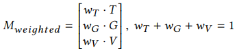
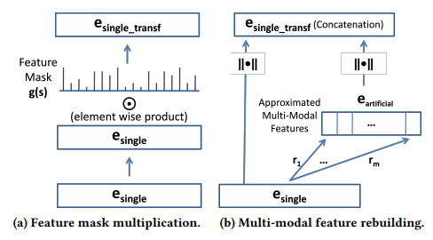

Proposes a simple yet effective method for combining different embedding spaces into a common fused tri-modal space
Suggests a method to improve a single embedding space by the fused tri-modal space

Only the common concepts in all three embedding spaces are fused together to create a single embedding vector
Uses WordNet lexemes as a template for choosing common concepts to be fused together
Besides simple concatenation, dimension reduction such as PCA or SVD can be applied on this matrix
Seems like the weights of each model is found by cross-validating on certain NLP tasks (e.g. concept similarity task in this paper)

Feature Mask:
For common concepts in two embedding spaces, calculate correlation(differences in each feature, similarity between two vectors)
Normalize this correlation vector by a sigmoid
Element-wise product between the single embedding vector and the feature mask
Feature Rebuilding
Train a mapping function (in this case, NN) between the single embedding vector for concept A --> feature n of concept A in the fused embedding space
Train a mapping function for every dimension of the fused embedding space
Normalize this artificial vector and concatenate it with the originam single embedding vector
Although it is simple and effective, it is still bounded by the availability of external sources such as WordNet, which can limit its application in other languages devoid of such source or texts within specific domains
It states that this fused model is more interpretable than the joint optimization approach --> But we still don't know semantic understanding behind each of the feature.